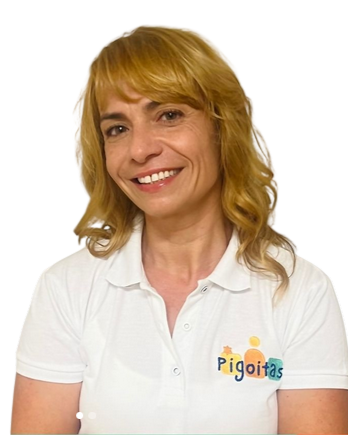
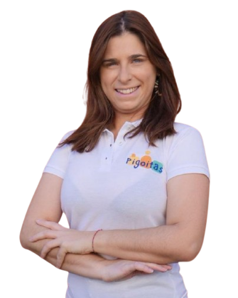
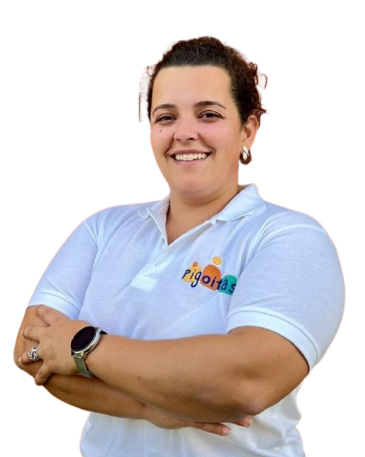
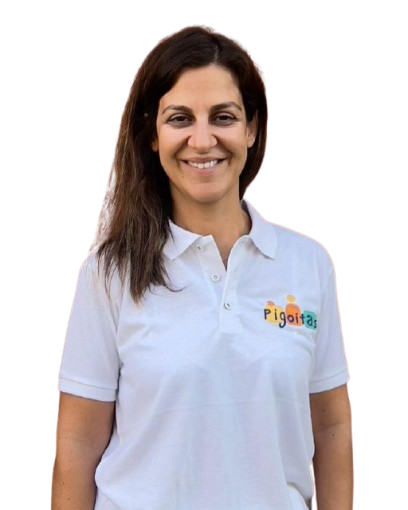
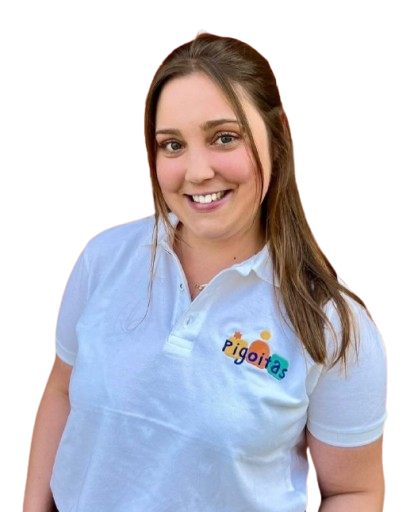
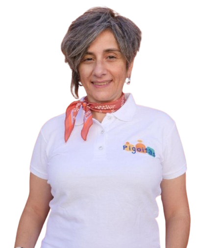
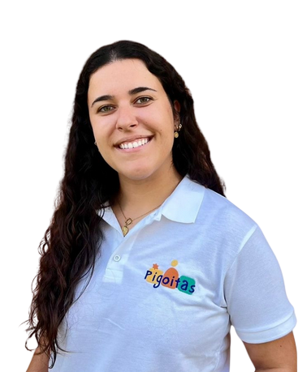
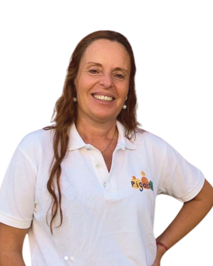

CONHEÇA A NOSSA EQUIPA

MARISA SANTOS
" Comunicativa divertida e muito otimista, o seu lema é: Continuar a tentar! "
Cognome: Dori
Formação: Fundadora do Pigoitas e Terapia da Fala
Especializações:
- Perturbações do Espectro do Autismo;
- Comunicação Aumentativa e Alternativa;
- Motricidade Orofacial;
" Vive de música, café e intuição. Pensa ‘fora da caixa’ e gosta de aprender, inovar e partilhar conhecimentos. Acredita que é pela comunicação e empatia que conseguiremos contribuir para a construção de um mundo melhor. Trás resiliência, coragem e motivação à equipa, que partilha consigo a missão de transformar vidas! "

RAFAELA SANTOS
" Sempre em movimento e a criar magia na vida dos Pigoitas. "
Cognome: Sininho
Formação: Design
Experiência: Monitora de Atividades Extracurriculares
" Vive de ideias e café, empenhada e criativa, está sempre disposta a ajudar. Coloca em prática as ideias de todos e encanta-nos com as suas criações, que tornam os dias da Pigoitada em momentos artísticos e interessantes. A Rafaela sabe fazer um pouco de tudo, desde as artes, até às danças, até aos mimos e cuidados para com todos. A Rafaela trás criatividade e a inovação à equipa. "

MARTA FONSECA
" Com boa energia e mãos no volante (suspeitamos que não tenha carro, mas sim teletransporte). "
Cognome: Papa Léguas
Formação: Psicomotricista
Especializações:
- Neuro Desenvolvimento;
- Inteligência Emocional;
- Relaxação Terapêutica e Psicossomática;
" Vive de café e da comunidade que abraça com coração e alma em todos os projetos a que se dedica. Trabalha em gabinete, meio aquático e faz terapia assistida por animais. Tem uma visão abrangente do desenvolvimento humano e é capaz de ligar os pontos e encontrar soluções num picar de olhos. A Marta é humilde e dedicada ao que faz. Trás à equipa força e união. "

ANA HENRIQUES
" Sabe gerir todas as emoções da Pigoitada. "
Cognome: Divertida Mente
Formação: Psicólogia
Experiência: Psicodiagnóstico e Psicoterapia de Apoio
" Vive de sushi e de viagens e está sempre pronta para mais uma formação. Apresenta-se sempre com uma tranquilidade e imparcialidade, que é capaz de transformar tempestades em dias mais brilhantes. Interessada e motivada pelo apoio às famílias e defensora dos direitos infantis, a ética profissional acompanha-a em toda a sua conduta. A Ana é a base moral da nossa equipa! "
JOÃO MATIAS
" Paz interior… paz interior… e paz interior. "
Cognome: Mestre Shifu
Formação: Técnico de Educação
Cursos: Técnico de Auxiliar Educativo, Massagem e Relaxamento
" Vive da calma que transmite e de sushi. Responsável e empenhado em tudo o que faz, trabalha com muita harmonia junto da Pigoitada, que adora o nosso João. De sorriso fácil e sempre disponível para animar os meninos e as colegas com as suas brincadeiras. Disponível para ajudar no relaxamento de todos naqueles dias maia agitados. É um elemento que traz bem-estar a todos os que o rodeiam. "

SARA MÉRTOLA
" Aquela que sabe brincar e divertir-se durante as sessões, mesmo a sério! "
Cognome: Minion
Formação: Terapia Ocupacional
Cursos: Integração Sensorial & Alimentação Pediátrica
" Não vive sem docinhos e brinquedos. Sempre pronta para desafios, constrói matérias incríveis para usar na sua missão, desenvolver competências através da principal ocupação da criança, brincar. Com um sorriso sempre aberto e uma energia contagiante, a Sara trás o fator alegria para a sua equipa e famílias que acompanha. "

RITA GUERREIRO
" Capaz de encher de boa energia qualquer espaço por onde passe. "
Cognome: Ritolas
Formação: Educadora de Infância
" Fundadora de uma companhia de teatro, é capaz de trazer a arte e a emoção ao ensino. Vive de picanha, esperança e abraços, viaja para fora e também para dentro da sua enorme imaginação. No Pigoitas, é responsável pela Mala das Emoções uma ferramenta física e simbólica, a partir da qual as crianças desenvolvem competências emocionais, com atividades divertidas e enriquecedoras. A Rita oferece plenitude e amor a todos aqueles que a rodeiam. "

NADINE SILVA
" Consegue preparar uma sala mágica num estalar de dedos. "
Cognome: Faísca
Formação: Terapia Ocupacional
" Vive de desportos radicais, viagens e comida alentejana. Sempre disposta a fazer mais e melhor, mantém uma postura humilde e dedicada para com as famílias que acompanha. A Nadine trás dedicação e espontaneidade à equipa. "

CARLA BARRIGA
" Capaz de acolher todos debaixo das suas asas, uma verdadeira mãe galinha. "
Cognome: Galinha Pintadinha
Formação: Educação Básica
Mestrado: Educação Especial
Espacialização: Intervenção Precoce e Desenvolvimento Infantil
" A Carla não dispensa uma boa mariscada, viagens e os sorrisos dos seus meninos. Atua no apoio pedagógico especializado onde intervém de forma inovadora e com estratégias multidisciplinares. É um porto de abrigo para todos que a conhecem. "